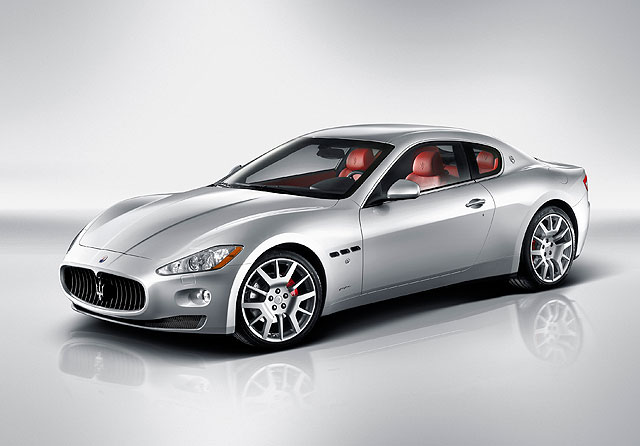

《Koenigsegg Agera R BLT》
即將登陸對岸的夢幻超跑～  大家還記不記得在有為曾經分享過的史上馬力最大車車TOP 10中，以高達1140匹最大馬力名列第六名的Koenigsegg Agera R呢？如果有機會能夠擁有這樣的夢幻超跑，你會不會希望它看起來是獨一無二的呢？最近Koenigsegg就依照買家的需求打造了一輛客製化的Agera R BLT，快跟著有為一起來看看吧！ 原汁原味的內容在這裡
|
|
|---|

 |
GranTurismo 車系的造型設計源自1947年Maserati A6 1500 Turismo的美學概念，以拉長且更優雅的雙門身段，接替原本的GranSport車系，成為Maserati旗下的雙門產品；而2008年推出、強調性能表現的GranTurismo S，除了承襲車系優雅形象外，Maserati也藉由外觀的小幅更動，為它創造了更富動感的外型意象，不但在車頭的三叉戟廠徽上，賦予紅色線條，引喻GranTurismo S更強的性能實力，車側也換上了更明顯的側裙，以及尺碼加大的20吋三叉戟樣式鋁圈，車尾行李箱並裝上了小鴨尾尾翼，搭配橢圓形左、右雙出排器尾管。
|
GranCabrio則是Maserati第一輛4人座軟篷跑車，發表於2009年9月德國IAA法蘭克福車展上，車頭與一般GranTurismo 車系相同，但A柱以後已重新設計，並以軟頂敞篷收尾、重現Maserati經典敞篷車的意像。至於以「Stradale」、義大利文街道為名的GranTurismo MC Stradale，是車系中性能最強的街道版賽車，源自Maserati的Trofeo GranTurismo MC賽車，外觀師法賽車風，並換上了更大鴨尾尾翼、底盤分流器及鰭狀孔道。
車室內部，GranTurismo車系除了GranTurismo MC Stradale為雙座設定外，皆採用了標準4座設定，是同級GT跑車中、空間最寬敞的車型，而且真皮、麂皮與木頭的選擇用料毫不馬虎，中控台並崁有一只復古指針式時鐘，營造出Maserati一貫的豪華氛圍。
|
至於性能輸出方面，國內先前引進的GranTurismo S，搭載排氣量4.7升之V8引擎，馬力可達440匹，扭力峰值則為50公斤米，而配置6速ZF手自排變速箱的GranTurismo S Automatic，動力輸出則與GranTurismo S相同。
而性能最強悍的GranTurismo MC Stradale，在不同的調校下、原本即可爆發450匹最大馬力，最大扭力則是能提供52.0公斤米，但2013年式已提升至可輸出460匹馬力和53公斤米扭力，不但能在4.5秒由靜止衝刺到時速100公里，極速也來到了時速303公里。
|
此外，GranTurismo車系除了維持前中置引擎配置外，原廠還將變速箱和差速器置於後軸前端，帶來47：53的前、後軸配重比，懸吊系統則可選配Skyhook主動式懸吊系統，換來更豐富的操駕體驗。
2012年3月、Maserati於瑞士日內瓦車展推出取代GranTurismo S車型的GranTurismo Sport，定位介於GranTurismo基本款以及高階的GranTurismo MC，外觀小幅更動，仿效GranTurismo MC，在水箱護罩的兩側擁有較大的進氣孔，讓車頭線條更具有張力，車身尺碼則和已改款的GranTurismo S相同，並更換兩張造型更動感、包覆性與支撐性亦同步提升的跑車式座椅，同時後座改變包覆部分的設計。
|
動力則是搭載同一具本體來自Ferrari、排氣量4,691c.c.的V型8缸自然進氣引擎，但最大馬力已提升至460匹，最大扭力則增加到53公斤米，並於2012年11月2日引進國內上市。
|